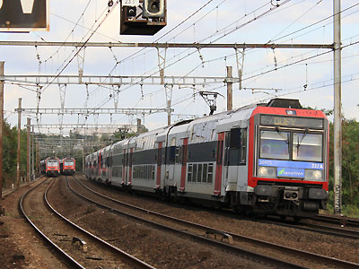

La Z 20900 version 
Sébastien Néri a réalisé une Z20900.

Ferrovia - 03 Juin 2012
Z 20900
Les Z 20900 sont des éléments automoteurs bicourants à deux niveaux conçus pour le service de Banlieue Parisienne et construits à 54 exemplaires de 2001 à 2003. Elles roulent sur le RER C d'où elles ont chassé les Z 5300. Elles ont également assuré un roulement sur le réseau Transilien Nord jusqu'en 2011.
Elles diffèrent des Z 20500 par leur chaine de traction ONIX composée d'onduleurs à transistors IGBT, identique à celle des Z 23500 TER 2N, et de moteurs plus puissants. Les rames sont réfrigérées. A partir de la rame 215A (Z 20929/20930), le nombre de baies ouvrantes est réduit. L'intérieur est aménagé en rangées de quatre sièges de front dont le confort est en net progrès par rapport aux anciens sièges anti-lacération.
Elles peuvent fonctionner en unités multiples entres elles et avec les Z 5600, Z 8800 et Z 20500 qui composent le parc de "Z2N".
Composition des rames
Les rames ont une composition à quatre caisses : M+R+R+M. Les deux remorques longues sont attelées par une barre d'attelage et communiquent par un soufflet étanche. En extrême soirée, l'accès aux motrices peut-être interdit afin de regrouper les passagers dans les deux remorques pour davantage de sécurité.
Quelques données techniques
Constructeur : Alstom
Tension d'alimentation : continu 1,5 kV et monophasé 25 kV, 50 Hz
Chaîne de traction : onduleurs de courant à transistors IGBT - Moteur asynchrones
Puissance totale : 3400 kW
Motorisation : deux moteurs 4 FXA 2858 asynchrones à cage d'écureuil par bogie, deux bogies moteurs Y 401 par motrices.
Bogies des remorques : Y 30 PL
Freinage : Mixte électrique à récupération, Electro-pneumatique doubles semelles frittées sur les essieux moteurs, simples semelles en fonte
et deux freins à disque (fonte / garniture composite) par essieu porteur. Anti-enrayeurs à glissement limité
Longueur : 103m
Masse : 245t
Pour plus d'info :
La fiche Z 20900 sur Wikipedia
Fiche technique des Z 20900 de Florent Brisou
L'inventaire des Z 20900 sur Trains du Sud-Ouest
La fiche Z 20900 sur trains-europe.fr
Le parc Z 20900 sur Metropole.net (archive)
La Z 20912/11 à Ste Geneviève des bois, dotée de baies ouvrantes (22/08/2010)

La Z 20973/74 croise deux Z2N de première génération (19/09/2011)
La Z 20988 remise sur rail après l'exposition Train Capitale, Pantin (20/06/2003)
La Z 20989/90 RER C, mission DEBA à St Michel/Orge (01/04/2012)